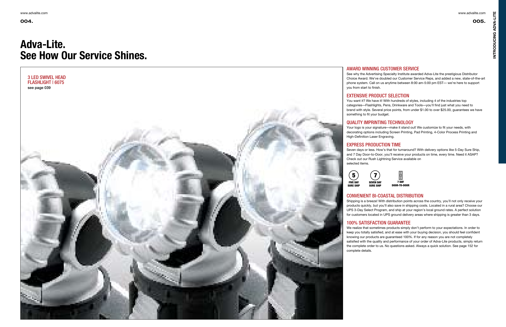
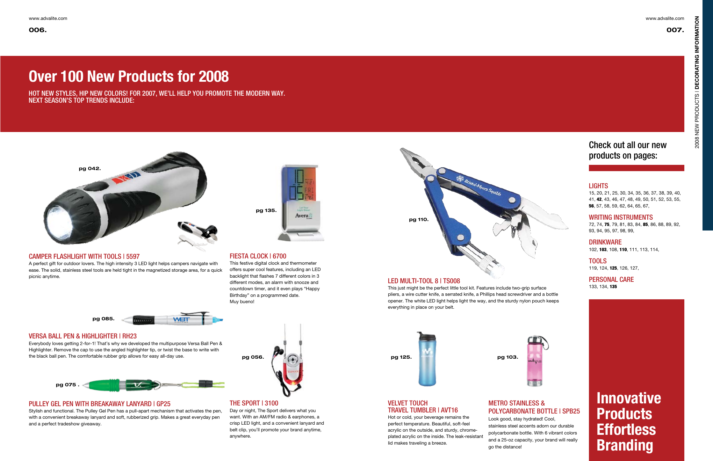
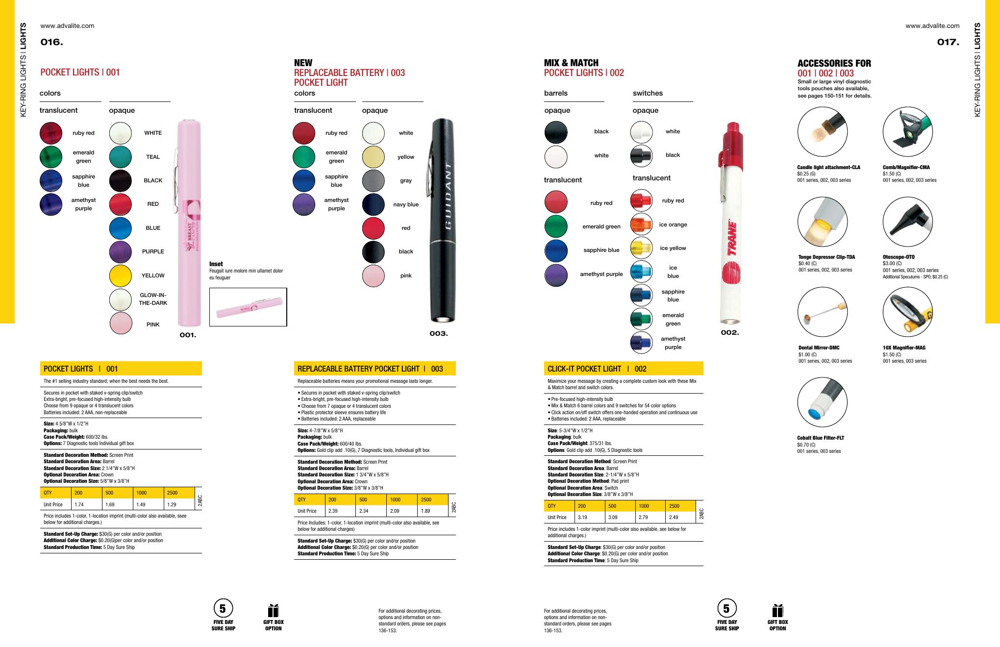
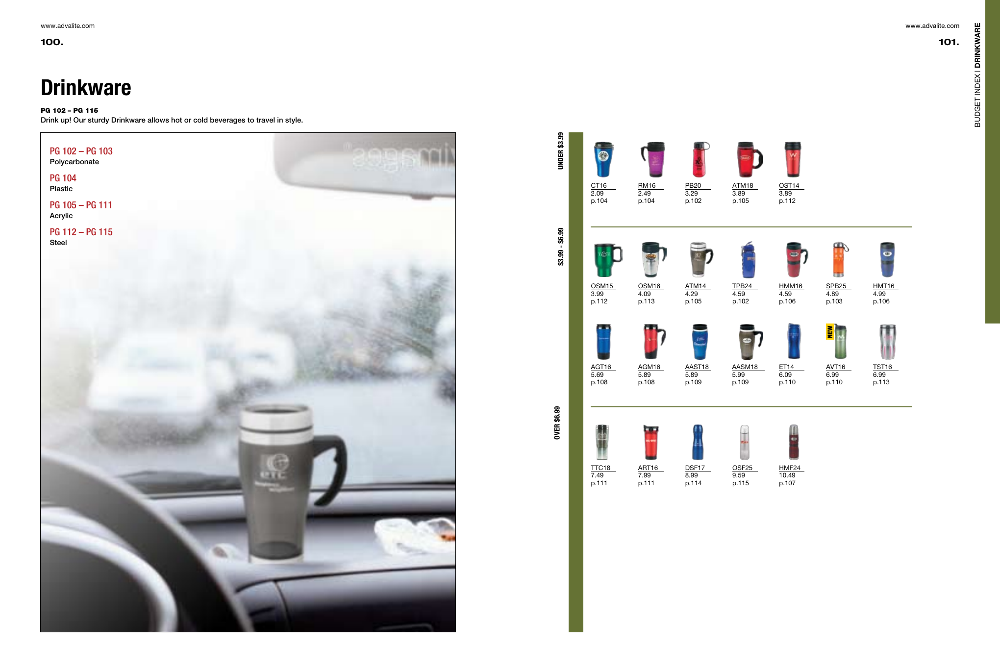
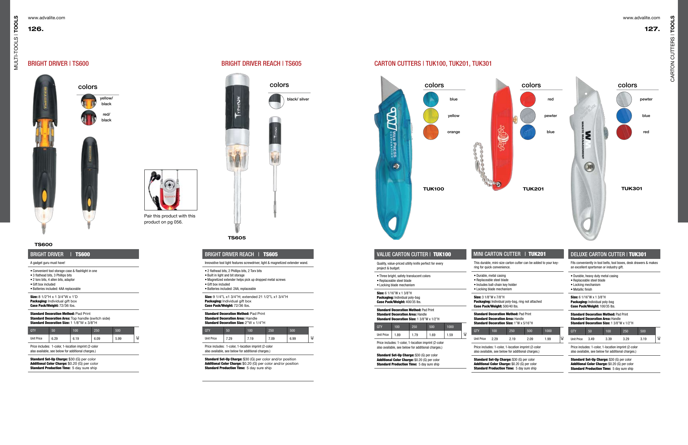

Adva-Lite · 2007–2008 catalog
See How Our Service Shines.
A 150-plus-page printed promotional-products catalog unifying hundreds of SKUs across lights, writing instruments, drinkware, tools, and personal care.
- RoleCatalog design and production
- Format150+ page printed catalog
- SourceSurviving review PDF exports
- ProductionInDesign files + press-ready output
Printed catalog spreads · recovered from review PDF exports
Representative pages showing the editorial system, category navigation, product photography, pricing tables, color options, decoration specifications, and service iconography.





Recovery notes.
The catalog correspondence spans July through November 2007 and documents concept development, photography planning, pagination, product-copy intake, multiple proofing rounds, client comments, corrections, and final approvals.
The catalog itself was a physical print piece produced in Adobe InDesign CS3. During development, PDFs were exported to show revisions and gather approvals; those review exports are the surviving visual record used here.
A November 21, 2007 delivery email records the final handoff of collected InDesign folders and PDF/X-1a files for commercial printing, including a lights section larger than 900 MB. Client feedback on the first major proof praised the project’s early delivery and accuracy. Marked and incomplete review pages are intentionally excluded from this presentation.